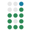
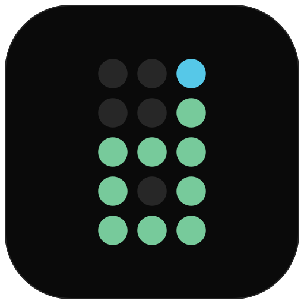
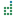

Every contributor, ranked. A "d" drawn in activity dots.
The mark is a lowercase d built on a 3×5 dot grid, the same cell language as the 52-week activity graph devstats draws in the terminal. Lit cells form the letter; dim cells show where nothing happened.
The top of the stem is the one cyan dot. In the CLI, cyan marks the highest value in each column, so here it stands for the leader of the ranking. Everything else uses the theme's green.
The wordmark is set in JetBrains Mono Bold, tracked 4% tighter and converted to outlines. A monospace face matches the command people type.
Every variant except the pixel-snapped favicon reuses the same path data from logo-mark.svg. Only color, scale and the wordmark change. Adaptive cards follow your system light/dark setting, as the files themselves do.

logo-mark.svg
logo-icon.svg
16×16pxfavicon.svgGreen and cyan come straight from the CLI theme. On light backgrounds, deeper tones keep at least 4:1 contrast.
// tailwind.config.js theme: { extend: { colors: { brand: { primary: '#77CA9B', accent: '#56C8E8', primaryDeep: '#2E8A57', accentDeep: '#1A7FA3', bg: '#0A0A0A', surface: '#111111', border: '#262626', muted: '#A1A1A1', text: '#FAFAFA', }, }, fontFamily: { mono: ['JetBrains Mono', 'ui-monospace'], sans: ['Inter', 'system-ui'], }, }, }
assets/logo/ ├── logo-mark.svg # 64×64 canonical mark ├── logo-full.svg # 320×72 mark + wordmark ├── logo-wordmark.svg # 180×40 text only ├── logo-icon.svg # 512×512 app icon ├── favicon.svg # 16×16, 2 layers ├── logo-white.svg # for dark backgrounds ├── logo-black.svg # for light backgrounds ├── png/ # 24 raster exports (icon 16–1024) └── brand-showcase.html # mark, full, wordmark and favicon adapt # to prefers-color-scheme on their own